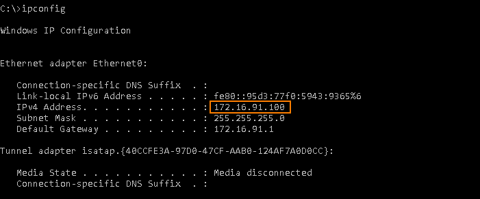
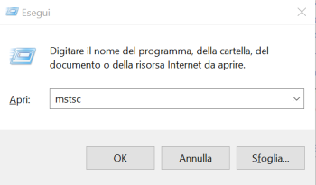
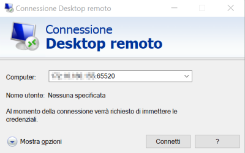
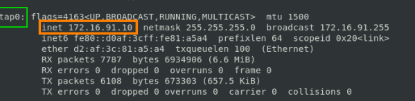
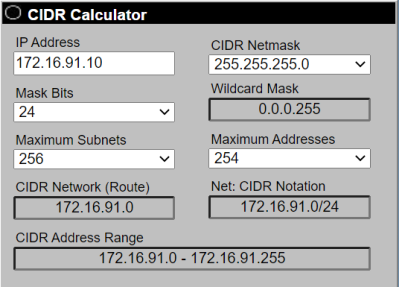

remote connection
How to open an RDP connection to a remote machine from Linux
We will use
rdesktop that is an open source UNIX client for connecting to Windows Remote Desktop Services, capable of natively speaking Remote Desktop Protocol (
RDP) in order to present the user's Windows desktop.
Remote Desktop Protocol (RDP) is a proprietary protocol developed by Microsoft, which provides a user with a graphical interface to connect to another computer over a network connection.
Default port for this protocol is 3389
rdesktop [IP-address-Windows-machine]:[port]
in fact after we connect if we use the
ipconfig on the Windows machine we can check:
 How to open an RDP connection to a remote machine from Windows
press
Windows key+r and execute
mstsc:
from here we can type the remote machine address and its port(if is not the default one 3389)
Our VPN
so the adress range is from 172.16.91.00 to 172.16.91.255 and our host in this network has an address of
172.16.91.10